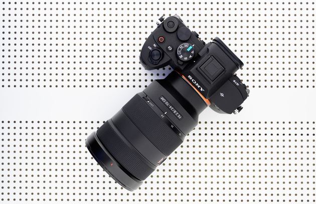

Sony A7 IV: неделя с экспертом
Основные особенности камеры
В модельном ряду полнокадровых беззеркалок Sony обычной «семёрке» отводится важное место: с самого начала это была базовая модель с наиболее сбалансированными характеристиками, адресованная максимально широкому кругу покупателей. Эта же модель традиционно являлась самой доступной. В 2021 году компания выпустила уже четвёртое поколение таких фотоаппаратов. Sony A7 IV стала дороже предыдущей модели на старте продаж, однако и характеристики её были заметно улучшены. Например, теперь очень трудно провести черту, в чём ILCE-7M4 сильнее — в фото или в видео. Универсальность не только сохранилась, но и расширилась. Правда, в ущерб доступности.

Обо всех тонкостях работы с Sony A7 IV расскажем в нашем лонгриде в формате «Неделя с экспертом»! Забегая вперёд, скажем: в редакции камера пробыла намного дольше — за неделю с ней не разобраться.
ILCE-7M4 / FE 100-400mm F4.5-5.6 GM OSS Установки: ISO 200, F5.6, 1/4000 с, 309.0 мм экв.C
Характеристики и особенности
Мы собрали основные характеристики Sony A7 III и Sony A7 IV в сводную таблицу, которая наглядно демонстрирует улучшения. А ниже чуть более подробно расскажем об основных моментах.
Даже беглого взгляда на таблицу, в которой мы выделили преимущества новой камеры, достаточно для понимания: в Sony A7 IV были улучшены не отдельные элементы и характеристики, а абсолютно всё. Это принципиально новый фотоаппарат на новой матрице и топовом процессоре от Sony A1. Сообщается, что производительность BIONZ XR была повышена в 8 раз по сравнению с BIONZ X.
ILCE-7M4 / FE 100-400mm F4.5-5.6 GM OSS Установки: ISO 100, F5.6, 1/1000 с, 285.0 мм экв.Cкачать RAW
Простой пример: A7 IV способна делать до 120 вычислений автофокуса и экспозиции в секунду; улучшены углы, с которых будут определяться глаза при автофокусе. Практически бесконечный буфер — тоже заслуга нового процессора. И конечно, новые видеовозможности.
Статьи
- Как пользоваться фотоаппаратом?
- Что такое макро? Особенности и приёмы съёмки мелких предметов
- Пейзажная астрофотография
- Обзор Sony A7 IVх
- Тест